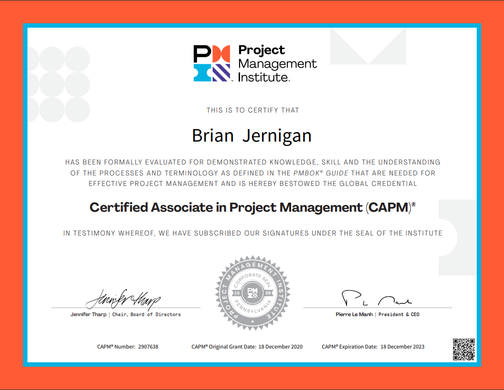

As a project management analyst at HCL, I Independently managed a team of fifteen members to establish a Cloud Disaster Recovery site for a deal worth over $200k, and also worked as one of six project managers to migrate a client’s physical database entirely to the cloud. I was nominated and selected to a team of five members to train employees across six delivery units in the company’s new reporting software, Smartsheet. I created dashboards in this software using programmed graphs, widgets, and reports to attractively display project data such as, knowledge acquisition progress, access management, resource onboarding, RAID items, and next steps. Finally, I communicated progress, roadblocks, and decisions to customer stakeholders daily, providing my recommendations on risk mitigation and avoidance, and built detailed project plans, work breakdown structures, and Gantt charts for presentation to both client and internal management.
As a member of the Global Value Engagement Execution team, I assisted with the organization and development of projects for the Asia Pacific Project Management Office (PMO). We enforced ISO 9001 global project management standards for projects across Japan, Korea, India, China, and Australia in order to deliver real, business value to the customer. I ensured project managers provide accurate, up-to-date information in system tools, and compile and present reports to higher management. Utilizing SAP Business Objects and Excel Macros, I helped build a semi-automated method of extracting and displaying project budget data on an internal dashboard on the 3DEXPERIENCE platform. Additionally, I reviewed Work Breakdown Structures (WBS) in Microsoft Project, and conducted weekly Project Review Board meetings in order to track project performance and execution over time.
Prepared lunch and dinner dishes in a fast-paced environment for an upscale, Mediterranean-inspired restaurant with seating for 85 customers. In collaboration with the Head Chef, crafted original, curated dishes for monthly wine tasting events. I also forecasted weekly inventory and ordered new supplies accordingly to guarantee food costs stayed below the target threshold. It was my responsibility to ensure the kitchen always adhered to established safety and hygiene guidelines while preparing meals and party arrangements.
Brokered truckload, LTL, and partial shipments for a third-party logistics company, while also maintaining accounts for customers with shipping needs. I studied market trends and seasonality in order to identify profitable hauling routes and negotiate competitive rates with freight carriers across the US. I also developed additional business opportunities with my customers by maintaining first-class communication and service.
